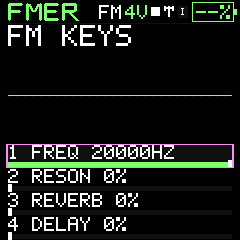

Start here
Welcome to FMER
A standalone FM and VA instrument, with a local companion for organizing and protecting your music.
FMER combines six-operator FM and virtual analog synthesis with four mono sequencer tracks, an arpeggiator and shared effects. The companion runs on your own computer. It needs no account or cloud library.
Find your next step
- Start the companion and edit a sound
- Organize instruments and projects
- Record four tracks
- Back up and restore an FM-1
- Find a physical control or menu
- Look up every sound parameter
- Diagnose a problem
This handbook documents firmware 734 and Companion 734 r3. Search works offline, including when you open index.htm directly from disk. Print any article with your browser. The qualification and limits page distinguishes available functions from work still pending.
Read Licensing, credits and interoperability to learn how FMER builds on Felucca hardware support and the MSFA FM engine, and which patch formats can move between instruments.
